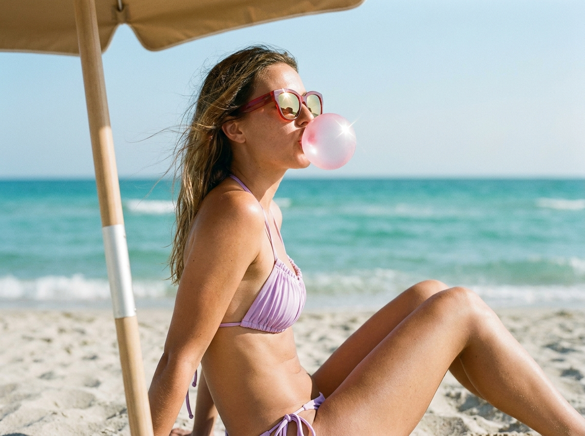
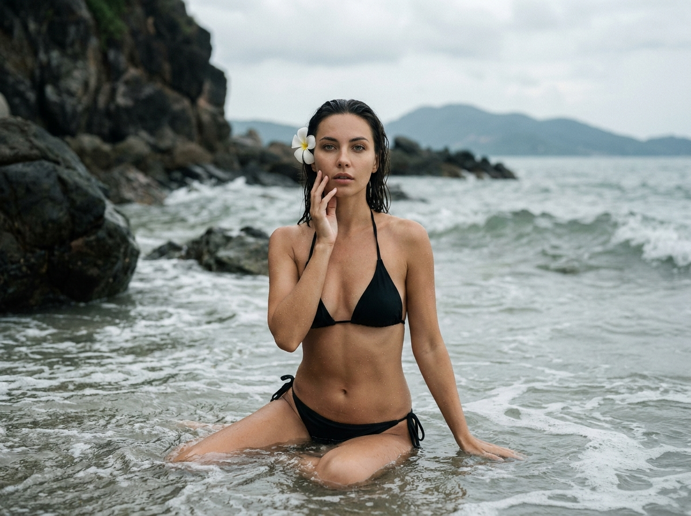
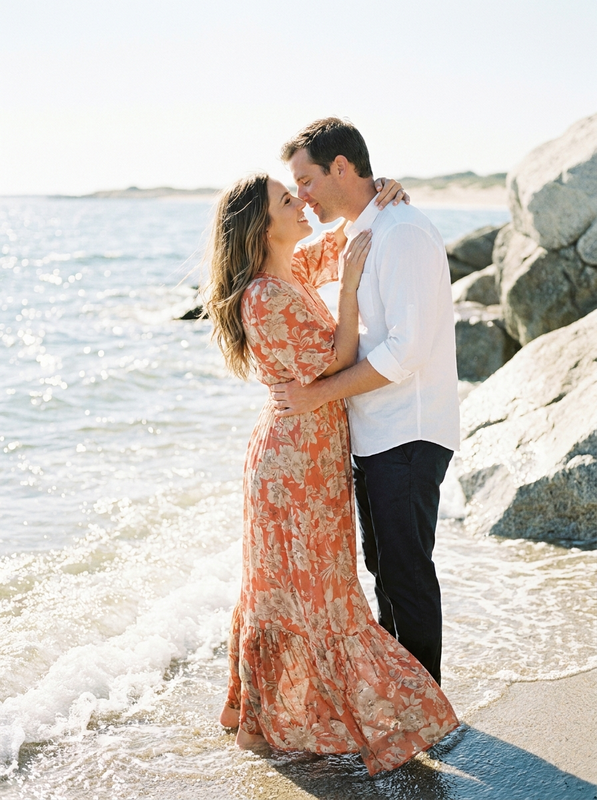
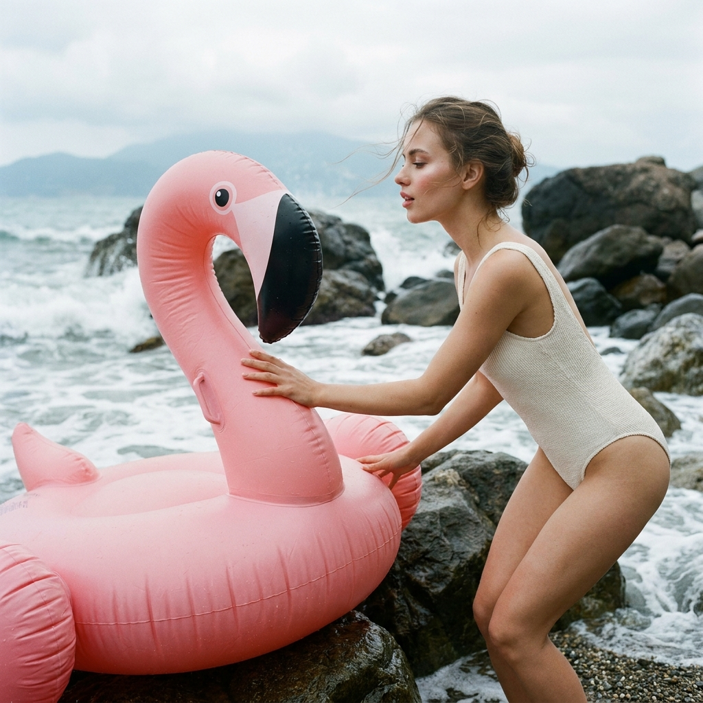
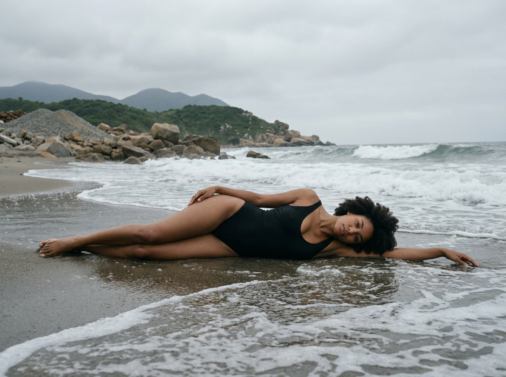
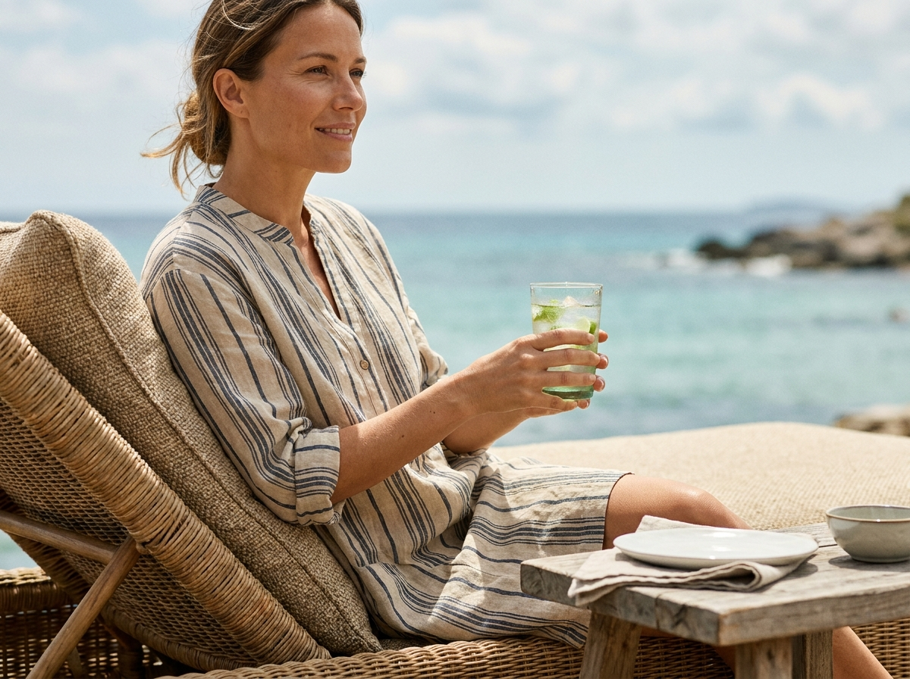
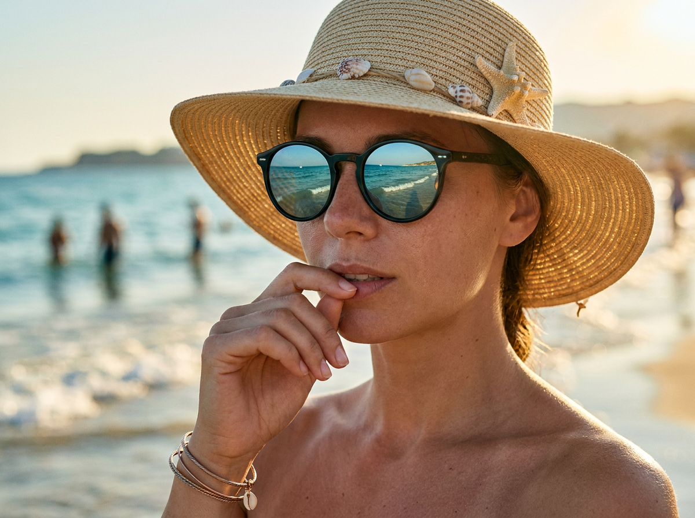
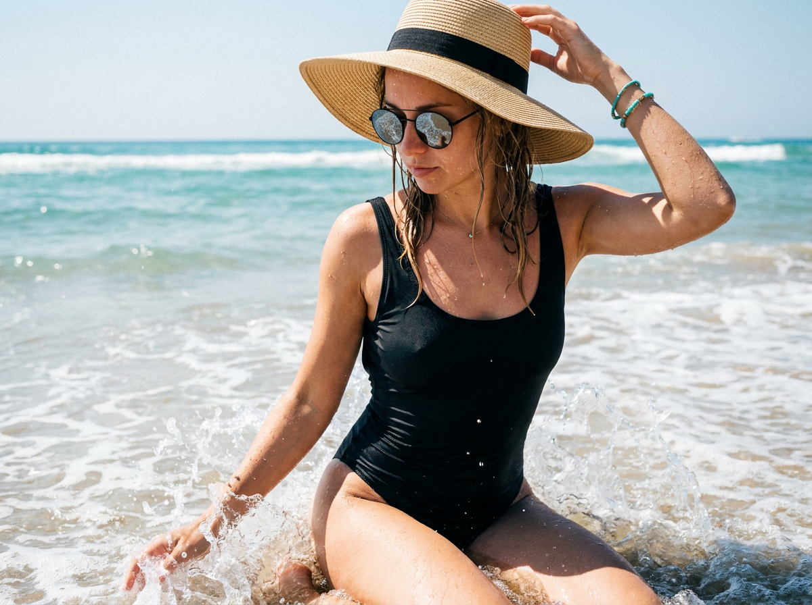
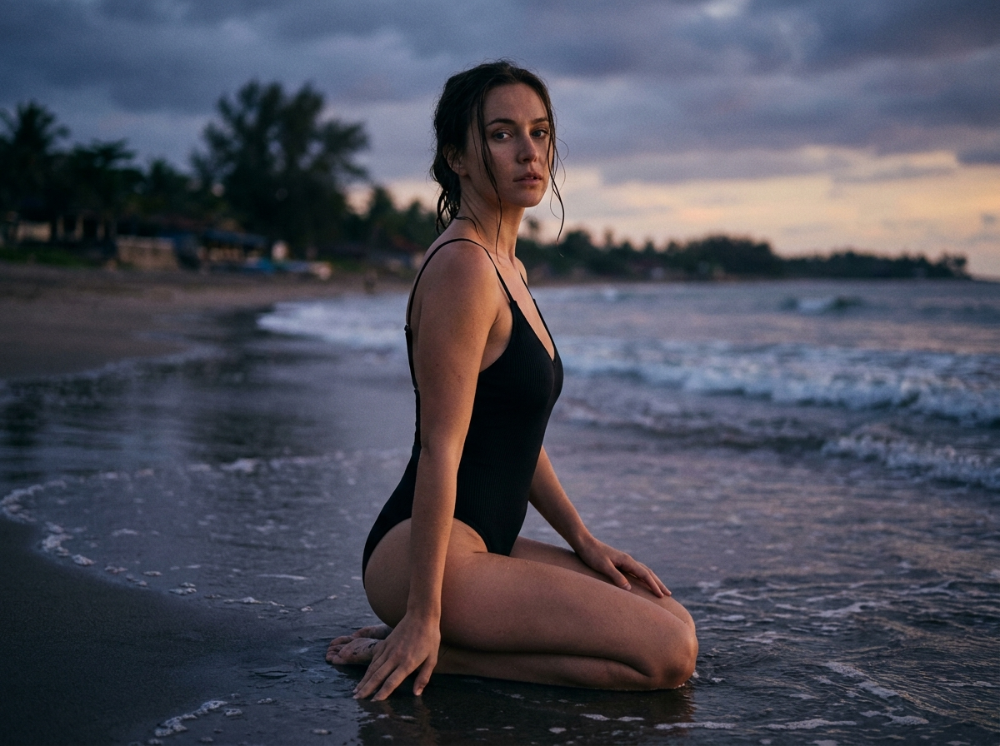
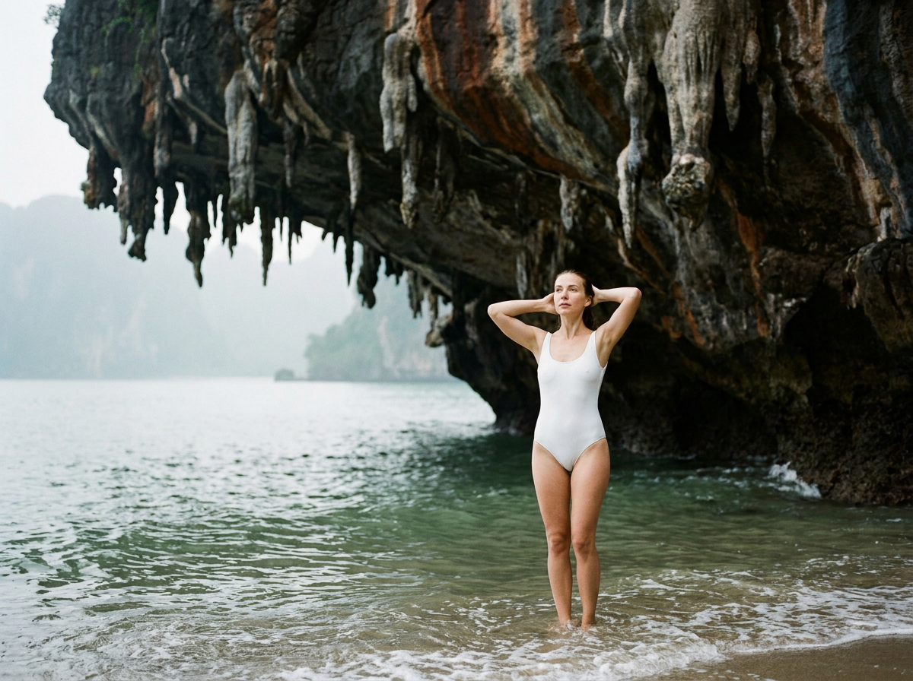

ИИ-фото на пляже: 10 промптов для нейросети

Пляжный кадр часто выглядит ненатурально: руки ломаются, вода становится пластиковой, а поза напоминает каталог купальников. Генерация помогает собрать сцену заранее — выбрать свет, ракурс, настроение и детали, которые сложно поймать за один дубль.
В подборке — 10 сценариев для летних ИИ-фото: fashion-съёмка с пузырём жвачки, портрет в очках, кадры в прибое, романтическая сцена, фламинго, коктейль на лежаке и атмосферный снимок у морского грота.
Как сгенерировать такое фото: пошагово
Нужен снимок анфас при ровном свете, лицо в кадре целиком, без тёмных очков и головных уборов. Разрешение от 1000 пикселей по короткой стороне. Чем чётче исходник, тем точнее модель повторит черты.
Выберите сценарий ниже и нажмите «Копировать» — текст уйдёт в буфер целиком, вместе с командой сохранения внешности. Эта команда стоит первой строкой и отвечает за то, чтобы на выходе было ваше лицо, а не случайное.
Кнопка «Сгенерировать» рядом с каждым промптом открывает модель в новой вкладке. Nano Banana Pro работает с референсом лица — в отличие от моделей, которые генерируют портрет с нуля и узнаваемость теряют.
Промпт — в поле ввода, портрет — через загрузку референса. Порядок значения не имеет, но без референса команда сохранения внешности работать не будет: модели нечего сохранять.
Для сторис и ленты берите 9:16, для превью и обложек — 4:3. Первый результат редко идеален: если поза или свет ушли не туда, поправьте соответствующую часть промпта и запустите заново. Обычно хватает двух-трёх итераций.
10 промптов для генерации
1. Пляжный кадр с жвачкой
Строго сохранить внешность по загруженному референсу: черты лица, пропорции, мимику и текстуру кожи без изменений. Фотореалистичный вертикальный fashion-кадр в стиле lifestyle/travel, снятый на пляже при ярком летнем дневном свете. В центре — взрослая девушка сидит на песке полубоком, опираясь одной рукой рядом с телом. Корпус немного развёрнут к камере, голова повернута вправо, виден профиль. Колени согнуты, одна нога отведена назад и чуть в сторону. На лице игривое выражение, губы слегка разомкнуты, изо рта выходит крупный пузырь розовой жвачки с прозрачными участками, солнечными бликами и мягкой тенью на коже. Натуральная фактура кожи, лёгкий загар, волосы развеваются ветром. Большие солнцезащитные очки, естественная мимика, реалистичные пропорции. Камера на уровне глаз, объектив 50 мм, малая глубина резкости, высокая детализация, естественная цветопередача, без пластиковой ретуши.
2. У воды с белым цветком

Строго сохранить внешность по загруженному референсу: черты лица, пропорции, мимику и текстуру кожи без изменений. Кинематографичный фотореалистичный снимок на диком пляже. Взрослая девушка сидит в мелководье у самой кромки берега: ноги согнуты и частично скрыты прозрачной водой, корпус немного наклонён вперёд. Левая рука поднята к щеке, пальцы легко касаются подбородка, правая ладонь лежит в воде и помогает удерживать равновесие. Лицо обращено к объективу, взгляд прямой, выражение мягкое и спокойное. В волосах у виска закреплён белый цветок орхидеи или плюмерии. На коже видны мелкие капли и влажный блеск, волосы слегка двигаются от ветра и брызг. Чёрный купальник с тонкими завязками. Покажите движение воды, натуральную текстуру кожи и влажной ткани. Съёмка объективом 85 мм, мягкий контраст, реалистичная пена, высокая детализация, без постановочной скованности.
3. Объятие на кромке моря

Строго сохранить внешность по загруженному референсу: черты лица, пропорции, мимику и текстуру кожи без изменений. Романтичная фотореалистичная сцена на морском берегу: двое взрослых людей стоят у линии прибоя, вокруг небольшие волны и прозрачная пена. Мужчина находится справа, слегка развёрнут к камере, но смотрит на женщину. Женщина стоит слева, подняла голову к нему и улыбается. Мужчина одной рукой бережно обнимает её за талию или верх бедра, второй поддерживает спину; женщина держит его за плечи или за рукав. Их лица близко, мужчина целует её в щёку или почти касается губами. Эмоции нежные, естественные, без театральной позы. Часть волос женщины ветер отбрасывает назад, на коже заметны мягкие солнечные блики. Снимок в золотистом дневном свете, объектив 50 мм, фокус на лицах, фон слегка размыт, реалистичные отражения в воде, натуральные оттенки кожи и ткани.
4. Розовый фламинго у волн

Строго сохранить внешность по загруженному референсу: черты лица, пропорции, мимику и текстуру кожи без изменений. Летний фотореалистичный кадр на морском берегу, девушка находится справа у кромки воды — стоит или приседает на плоских камнях. Она повернула корпус влево, к большому розовому надувному фламинго, и одной рукой касается его шеи, второй удерживает игрушку или опирается рядом. Лицо показано в частичном профиле, выражение сосредоточенное, но игривое, губы сомкнуты. Фламинго занимает левую половину композиции, лежит на песке и камнях, его голова поднята кверху. Матовый винил с естественными складками, мягкими бликами и реалистичной фактурой; чёрный клюв, игрушечный глаз с пластиковым бликом от неба. Яркий солнечный день, небольшие волны на заднем плане, объектив 35 мм, вертикальная композиция, естественные тени, высокая детализация без эффекта рекламного 3D-рендера.
5. Тишина в линии прибоя

Строго сохранить внешность по загруженному референсу: черты лица, пропорции, мимику и текстуру кожи без изменений. Кинематографичная фотореалистичная съёмка на пляже: взрослая девушка лежит на мягком влажном песке прямо в линии прибоя, тело вытянуто вдоль берега, голова повёрнута к камере. Взгляд спокойный, лицо расслаблено, поза похожа на случайно пойманный момент тишины. Одна рука вытянута вдоль тела, вторая отведена назад и немного в сторону. На девушке чёрный цельный купальник либо чёрный комплект из топа и низа, матовая ткань с читаемыми складками. Допустимы тонкий браслет или цепочка на запястье без яркого блеска. Крупные волны накатывают на берег, белая пена размывает нижний передний план, вода выглядит живой и прозрачной, на поверхности естественные блики. Съёмка объективом 35 мм с низкой точки, мягкий рассеянный свет, реалистичная кожа, пена и влажный песок, высокая детализация.
6. Коктейль на плетёном лежаке

Строго сохранить внешность по загруженному референсу: черты лица, пропорции, мимику и текстуру кожи без изменений. Вертикальный фотореалистичный lifestyle-кадр на морском курорте в солнечный день. Взрослая женщина сидит полубоком на большом ротанговом лежаке или диване из плетёной ткани. Видна фактура плетения, края подушек и мягкие складки материала. Ноги согнуты, одна вытянута вперёд, руки расслаблены, корпус слегка повёрнут к столику. Голова направлена вправо, в сторону моря или собеседника, взгляд устремлён вдаль, на лице лёгкая улыбка и спокойное умиротворение. В одной руке прозрачный бокал с напитком светлого лаймового оттенка, внутри кубики льда и кусочки фрукта; стекло даёт аккуратные солнечные блики. На столике можно показать детали курортной обстановки, но не перегружать фон. Объектив 50 мм, естественная перспектива, чёткий передний план, мягкое размытие моря, реалистичный свет и натуральная кожа.
7. Портрет в ракушечной шляпе

Строго сохранить внешность по загруженному референсу: черты лица, пропорции, мимику и текстуру кожи без изменений. Крупный фотореалистичный пляжный портрет молодой взрослой девушки с уверенным спокойным выражением. Она смотрит прямо в объектив сквозь тёмные зеркальные круглые солнцезащитные очки без просветов. На голове широкополая соломенная шляпа, украшенная морскими ракушками и маленькими звёздочками; одна звезда хорошо заметна, край поля подсвечен солнцем. Волосы частично скрыты под шляпой, отдельные пряди выбиваются по бокам и движутся от ветра. Одна рука поднята к подбородку, пальцы легко касаются губы, вторая отведена назад и чуть приподнята. На запястьях несколько тонких браслетов и цепочек с подвесками-ракушками, мелкими металлическими элементами и морскими деталями. Объектив 85 мм, фокус на лице и очках, фон пляжа мягко размыт, солнечный контровой свет, натуральная текстура кожи, высокая детализация без чрезмерной ретуши.
8. Колени в мелкой воде

Строго сохранить внешность по загруженному референсу: черты лица, пропорции, мимику и текстуру кожи без изменений. Вертикальная летняя фотография с фотореалистичной пляжной сценой. Взрослая девушка полностью помещается в кадр и сидит на коленях в мелкой воде у берега. Колени хорошо видны, ноги согнуты, тело слегка наклонено вперёд. Одной рукой она придерживает широкополую соломенную шляпу, второй тянется вниз и касается воды рядом с ногами в момент, когда набегают мелкие брызги. Лицо наклонено под углом к поверхности, глаза скрыты за тёмными зеркальными очками без просветов, выражение спокойное. Из-под шляпы выбиваются влажные пряди, часть волос прилипла к коже. На лице, плечах и ткани заметны солнечные блики, капли воды и следы намокания. Покажите естественную рябь, прозрачный мелководный прибой и влажный песок. Объектив 35 мм, вертикальный кадр, резкость на фигуре, реалистичные цвета и детали воды.
9. Сумерки у мокрого песка

Строго сохранить внешность по загруженному референсу: черты лица, пропорции, мимику и текстуру кожи без изменений. Кинематографичный фотореалистичный кадр на пляже в сумерках. Взрослая девушка сидит на коленях на влажном песке у самой кромки воды. Корпус слегка развёрнут вправо, к морю, а голова повернута к камере под небольшим углом. Выражение задумчивое и спокойное, губы расслаблены, взгляд читается и остаётся главным фокусом изображения. Одна рука опирается на песок сбоку, пальцы лежат свободно; вторая опущена к колену и помогает сохранять равновесие. Несколько прядей выбились из причёски и прилипли к коже из-за влажного воздуха. Натуральная текстура лица, минимальный макияж, без сильной ретуши. Украшения почти отсутствуют, допустимы маленькие серьги. Приглушённый сине-фиолетовый свет после заката, мягкие отражения на мокром песке, спокойное море на фоне. Объектив 85 мм, малая глубина резкости, точный фокус на глазах, естественная плёночная цветокоррекция.
10. У грота среди скал

Строго сохранить внешность по загруженному референсу: черты лица, пропорции, мимику и текстуру кожи без изменений. Драматичный кинематографичный морской пейзаж в вертикальном формате. Огромный скальный массив занимает большую часть кадра слева и сверху: тёмная порода покрыта выразительной фактурой, местами заметны ржаво-коричневые оттенки. Над берегом нависает грот, с его потолка свисают длинные натуральные сталактиты, похожие на каменные сосульки. В нижней трети видна узкая полоса песка и мелководья. На переднем плане по центру, немного вдали, стоит взрослая девушка в белом цельном купальнике с матовой слим-фит тканью и без яркого принта. Она заходит в воду по щиколотку, корпус слегка повёрнут к скалам, руки подняты вверх в выразительном жесте. Фигура заметна, но масштаб подчёркивает величие пещеры. Холодный рассеянный свет с небом в просвете, мокрые камни, реалистичная вода, объёмные тени. Объектив 24 мм, широкий вертикальный план, высокая детализация породы, разрешение 4K.
Что важно учесть в этом стиле
Пляжный реализм держится на трёх вещах: физике воды, направлении света и правдоподобной позе. Укажите, где находится источник солнца, какие части тела мокрые и куда движутся волосы. Иначе нейросеть может сделать одинаковый блеск на коже, песке и воде.
Для портрета подойдут 50–85 мм, для сцены с гротом или фламинго — 24–35 мм. Если нужен узнаваемый человек, используйте качественный референс с открытым лицом и не смешивайте его с десятком стилистических указаний. Для сложной композиции лучше сначала получить общий кадр, а затем исправить руки, очки или мелкие детали отдельной генерацией.
Идеи для вариаций
- Замените дневной свет на золотой час или пасмурное утро.
- Добавьте полосатое пляжное полотенце, старый пирс или спасательную вышку.
- Попросите съёмку с низкой точки, чтобы усилить масштаб волн и скал.
- Сделайте серию в одной палитре: молочный песок, бирюзовая вода, розовый акцент.
- Поменяйте аксессуары: ракушки на шляпе, цветок в волосах или тонкие металлические браслеты.
- Для журнального эффекта задайте плёночное зерно, но оставьте кожу и воду детализированными.
Как собрать свой промпт
Начните с формата и типа кадра: крупный портрет, вертикальная lifestyle-сцена или широкий план. Затем опишите локацию, время суток и свет. После этого зафиксируйте героя: возраст, одежду, положение корпуса, рук, ног и направление взгляда.
В финале добавьте материальные детали — мокрый песок, капли, пену, винил фламинго, фактуру ротанга — и технические параметры. Например: «объектив 50 мм, фокус на глазах, малая глубина резкости, вертикальный кадр, разрешение 4K». Для сложных поз полезно сделать 8–12 вариантов, выбрать лучший силуэт и только потом уточнять аксессуары.
Ошибки, из-за которых кадр не получается
- Слишком общая поза. Фразы вроде «красивая девушка на пляже» не объясняют положение рук, коленей и корпуса.
- Конфликт света. Не задавайте одновременно жёсткое полуденное солнце и мягкое освещение из пасмурного неба.
- Перегруженный фон. Если рядом человек, вода, скалы и надувная игрушка, укажите главный объект и его место в кадре.
- Пластиковая кожа. Просите натуральную текстуру, мелкие капли, поры и умеренную ретушь.
- Сломанные аксессуары. Очки, пальцы, браслеты и подвески лучше описывать отдельно и проверять на крупных планах.
- Неправильный масштаб. Для грота или большой игрушки явно укажите, что занимает левую часть кадра, а фигура находится вдали.
Частые вопросы
Как сделать такое ИИ-фото бесплатно?
Попробуйте Kandinsky и Шедеврум: они подходят для текстовой генерации, но могут хуже сохранять лицо и сложную позу. Krea AI и Arena.ai удобны для экспериментов и вариантов, однако бесплатный доступ обычно ограничен числом генераций, скоростью или разрешением. Работа с референсом зависит от конкретного режима: иногда изображение можно загрузить только для стилизации, а не для точного переноса внешности. Не используйте чужие фото без согласия.
Как сохранить лицо по референсу?
Берите чёткий портрет без фильтров, сильных теней и закрывающих лицо очков. В настройках ищите режимы image reference, face reference или image-to-image. Сила влияния референса должна быть средней: слишком низкая меняет черты, слишком высокая ломает позу и одежду. Для точности сделайте несколько дублей, а затем доработайте лучший кадр.
Почему вода и пальцы выглядят ненатурально?
Вода и кисти относятся к самым сложным объектам для генерации. Упростите сцену, опишите одну конкретную позу и не добавляйте много жестов. Для воды задайте прозрачность, направление волн, пену и отражения. Если пальцы или очки искажены, используйте маскирование или отдельную перегенерацию проблемной области.
Как получить вертикальное фото для соцсетей?
Сразу укажите вертикальную композицию и соотношение сторон 4:5 или 9:16. Для портрета оставьте больше воздуха над шляпой, а для сцены у воды заранее определите место горизонта. После генерации не растягивайте изображение, а используйте дорисовку краёв или апскейл с сохранением пропорций.